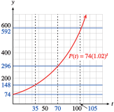
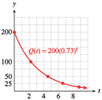

Section 5.3 Exponential Models
Subsection 5.3.1 Fitting an Exponential Function through Two Points
To write a formula for an exponential function, we need to know the initial value, \(a\text{,}\) and the growth or decay factor, \(b\text{.}\) We can find these two parameters if we know any two function values.
Example 5.3.1.
Find an exponential function that has the values \(f (2) = 4.5\) and \(f (5) = 121.5\text{.}\)
We would like to find values of \(a\) and \(b\) so that the given function values satisfy \(f (x) = ab^x\) . By substituting the function values into the formula, we can write two equations.
This is a system of equations in the two unknowns, \(a\) and \(b\text{,}\) but it is not a linear system. We can solve the system by the method of elimination, but we will divide one of the equations by the other.
Note that by dividing the two equations, we eliminated \(a\text{,}\) and we can now solve for \(b\text{.}\)
Next we substitute \(b = 3\) into either of the two equations and solve for \(a\text{.}\)
Thus, \(a = 0.5\) and \(b = 3\text{,}\) so the function is \(f (x) = 0.5(3^ x )\text{.}\)
Warning 5.3.2.
Knowing only two points on the graph of f is not enough to tell us what kind of function \(f\) is. Through the two points in Example 5.3.1, we can also fit a linear function or a power function.
You can check that the three functions below all satisfy \(f (2) = 4.5\) and \(f (5) = 121.5\text{.}\) The graphs of the functions are shown at right.
However, if we already know that we are looking for an exponential function, we can follow the steps below to find its formula. This method is sometimes called the ratio method. (Of course, if one of the known function values is the initial value, we can find \(b\) without resorting to the ratio method.)
To find an exponential function \(f(x)=ab^x\) through two points:.
Use the coordinates of the points to write two equations in \(a\) and \(b\text{.}\)
Divide one equation by the other to eliminate \(a\text{.}\)
Solve for \(b\text{.}\)
Substitute \(b\) into either equation and solve for \(a\text{.}\)
Activity 5.3.1.
Use the ratio method to find an exponential function whose graph includes the points \((1, 20)\) and \((3, 125)\text{.}\)
We can use the ratio method to find an exponential growth or decay model if we know two function values.
Example 5.3.3.
The unit of currency in Ghana is the cedi, denoted by ¢. Beginning in 1986, the cedi underwent a period of exponential inflation. In 1993, one U.S. dollar was worth ¢720, and in 1996, the dollar was worth about ¢1620. Find a formula for the number of cedi to the dollar as a function of time since 1986. What was the annual inflation rate?
We want to find a function \(C(t) = ab^t\) for the number of cedi to the dollar, where \(t = 0\) in 1986. We have two function values, \(C(7) = 720\text{,}\) and \(C(10) = 1620\text{,}\) and with these values we can write two equations.
We divide the second equation by the first to find
Now we can solve this last equation for \(b\) to get \(b = \sqrt[3]{2.25}\approx 1.31\text{.}\) Finally, we substitute \(b = 1.31\) into the first equation to find \(a\text{.}\)
Thus, \(C(t) = 108.75(1.31)^t\) , and the annual inflation rate was \(31\)%.
Activity 5.3.2.
The number of earthquakes that occur worldwide is a decreasing exponential function of their magnitude on the Richter scale. Between 2000 and 2005, there were 7480 earthquakes of magnitude 5 and 793 earthquakes of magnitude 6. (Source: National Earthquake Information Center, U.S. Geological Survey)
Find a formula for the number of earthquakes, \(N(m)\text{,}\) in terms of their magnitude.
-
It is difficult to keep an accurate count of small earthquakes. Use your formula to estimate the number of magnitude 1 earthquakes that occurred between 2000 and 2005.
How many earthquakes of magnitude 8 occurred?
Subsection 5.3.2 Doubling Time
Instead of giving the rate of growth of a population, we can specify its rate of growth by giving the time it takes for the population to double.
Example 5.3.4.
In 2005, the population of Egypt was \(74\) million and was growing by \(2\)% per year.
If it continues to grow at the same rate, how long will it take the population of Egypt to double?
How long will it take the population to double again?
Illustrate the results on a graph.
-
The population of Egypt is growing according to the formula \(P(t) = 74(1.02)^t\text{,}\) where \(t\) is in years and \(P(t)\) is in millions. We would like to know when the population will reach \(148\) million (twice \(74\) million), so we solve the equation
\begin{equation*} \begin{aligned}[t] 74(1.02)^t \amp= 148\amp\amp \text{Divide both sides by }74.\\ 1.02^t \amp= 2\amp\amp \text{Take the log of both sides.}\\ t \log 1.02 \amp= \log 2\amp\amp \text{Divide both sides by log 1.02.}\\ t \amp= \frac{\log 2}{\log 1.02}\\ \amp\approx 35 \text{ years} \end{aligned} \end{equation*}It will take the population about \(35\) years to double.
-
Twice 148 million is 296 million, so we solve the equation
\begin{equation*} \begin{aligned}[t] 148(1.02)^t \amp= 296\amp\amp \text{Divide both sides by }148.\\ 1.02^t \amp= 2\amp\amp \text{Take the log of both sides.}\\ t \log 1.02 \amp= \log 2\amp\amp \text{Divide both sides by log 1.02.}\\ t \amp= \frac{\log 2}{\log 1.02}\\ \amp\approx 35 \text{ years} \end{aligned} \end{equation*}It will take the population about \(35\) years to double again.
-
A graph of \(P(t) = 74(1.02)^t\) is shown below. Note that the population doubles every 35 years.

In Example 5.3.4, it took the population \(35\) years to double. Notice that the calculations in parts (a) and (b) are identical after the first step. In fact, we can start at any point, and it will take the population \(35\) years to double. We say that \(35\) years is the doubling time for this population. In the Homework problems, you will show that any increasing exponential function has a constant doubling time.
Activity 5.3.3.
In 2005, the population of Uganda was 26.9 million people and was growing by 3.2% per year.
-
Write a formula for the population of Uganda as a function of years since 2005.
\(P(t)=\) million
-
How long will it take the population of Uganda to double?
years
Use your formula from part (a) to verify the doubling time for three doubling periods.
-
Which statement is true?
The doubling time of a population depends on its initial value.
An increasing exponential function has a constant doubling time.
The doubling time is twice the percent growth rate.
The doubling time is half the percent growth rate.
If we know the doubling time for a population, we can immediately write down its growth law. Because the population of Egypt doubles in 35 years, we can write
In this form, the growth factor for the population is \(2^{1/35}\text{,}\) and you can check that, to five decimal places, \(2^{1/35} = 1.02000\text{.}\)
Doubling Time.
If \(D\) is the doubling time for an exponential function \(P(t)\text{,}\) then
So, from knowing the doubling time, we can easily find the growth rate of a population.
Example 5.3.5.
At its current rate of growth, the population of the United States will double in \(115.87\) years.
Write a formula for the population of the United States as a function of time.
What is the annual percent growth rate of the population?
The current population of the United States is not given, so we represent it by \(P_0\text{.}\) With \(t\) expressed in years, the formula is then
\begin{equation*} P(t) = P_0 2^{t/115.87} \end{equation*}We write \(2^{t/115.87}\) in the form \(\left(2^{1/115.87}\right)^t\) to see that the growth factor is \(b = 2^{1/115.87}\text{,}\) or \(1.006\text{.}\) For exponential growth, \(b = 1 + r\text{,}\) so \(r = 0.006\text{,}\) or \(0.6\)%.
Activity 5.3.4.
At its current rate of growth, the population of Mexico will double in 36.8 years. What is its annual percent rate of growth?
How can you find the growth factor for an exponential function when you know its doubling time?
Subsection 5.3.3 Half-Life
The half-life of a decreasing exponential function is the time it takes for the output to decrease to half its original value. For example, the half-life of a radioactive isotope is the time it takes for half of the substance to decay. The half-life of a drug is the time it takes for half of the drug to be eliminated from the body. Like the doubling time, the half-life is constant for a particular function; no matter where you start, it takes the same amount of time to reach half that value.
Example 5.3.6.
If you take \(200\) mg of ibuprofen to relieve sore muscles, the amount of the drug left in your body after \(t\) hours is \(Q(t) = 200(0.73)^t\text{.}\)
What is the half-life of ibuprofen?
When will \(50\) mg of ibuprofen remain in your body?
Use the half-life to sketch a graph of \(Q(t)\text{.}\)
To find the half-life, we calculate the time elapsed when only half the original amount, or \(100\) mg, is left.
\begin{equation*} \begin{aligned}[t] 200(0.73)^t \amp = 100\amp\amp \text{Divide both sides by 200.} \\ 0.73^t \amp = 0.5\amp\amp \text{Take the log of both sides.} \\ t\log 0.73 \amp = \log 0.5\amp\amp \text{Divide both sides by log 0.73.} \\ t \amp= \frac{\log 0.5}{\log 0.73} \\ \amp= 2.2 \end{aligned} \end{equation*}The half-life is \(2.2\) hours.After \(2.2\) hours, \(100\) mg of ibuprofen is left in the body. After another \(2.2\) hours, half of that amount, or \(50\) mg, is left. Thus, \(50\) mg remain after \(4.4\) hours.
-
We locate multiples of \(2.2\) hours on the horizontal axis. After each interval of \(2.2\) hours, the amount of ibuprofen is reduced to half its previous value. The graph is shown below.
\(t\) \(0\) \(2.2\) \(4.4\) \(6.6\) \(8.8\) \(Q(t)\) \(200\) \(100\) \(50\) \(25\) \(12.5\)
Activity 5.3.5.
Melatonin is an over the counter drug that can be used as a sleeping pill. The half-life of melatonin in the human body is between 0.5 and 4 hours. (source 1 )
Write a decay formula for the amount of melatonin remaining in the body for the minimal half life (the 0.5 hour half life), using \(A_0\) for the initial amount of melatonin.
In the minimal example above, what is the decay rate of the melatonin in the body?
In the minimal example above, if someone is given melatonin to help them sleep 8 hours before their school or work starts, what percent of the original amount of melatonin is left in their body when they need to be functioning?
Write a decay formula for the amount of melatonin remaining in the body for the maximal half life (the 4 hour half life) using \(A_0\) for the initial amount of melatonin.
In the maximal example above, what is the decay rate of melatonin in the body?
In the maximal example above, if someone is given melatonin to help them sleep 8 hours before their school or work starts, what percent of the original amount of melatonin is left in their body when they need to be functioning?
Just as we can write an exponential growth law in terms of its doubling time, we can use the half-life to write a formula for exponential decay. For example, the half-life of ibuprofen is \(2.2\) hours, so every \(2.2\) hours the amount remaining is reduced by a factor of \(0.5\text{.}\) After \(t\) hours a \(200\)-mg dose will be reduced to
Once again, you can check that this formula is equivalent to the decay function given in Example 5.3.6.
Half-Life.
If \(H\) is the half-life for an exponential function \(Q(t)\text{,}\) then
Radioactive isotopes are molecules that decay into more stable molecules, emitting radiation in the process. Although radiation in large doses is harmful to living things, radioactive isotopes are useful as tracers in medicine and industry, and as treatment against cancer. The decay laws for radioactive isotopes are often given in terms of their half-lives.
Example 5.3.7.
Cobalt-60 is used in cold pasteurization to sterilize certain types of food. Gamma rays emitted by the isotope during radioactive decay kill any bacteria present without damaging the food. The half-life of cobalt-60 is \(5.27\) years.
Write a decay law for cobalt-60.
What is the annual decay rate for cobalt-60?
We let \(Q(t)\) denote the amount of cobalt-60 left after \(t\) years, and let \(Q_0\) denote the initial amount. Every \(5.27\) years, \(Q(t)\) is reduced by a factor of \(0.5\text{,}\) so
\begin{equation*} Q(t) = Q_0 (0.5)^{t/5.27} \end{equation*}We rewrite the decay law in the form \(Q(t) = Q_0 (1 - r )^t\) as follows:
\begin{equation*} Q(t) = Q_0 (0.5)^{t/5.27}=Q_0 \left((0.5)^{1/5.27}\right)^t = Q_0 (0.8768)^t \end{equation*}Thus, \(1 - r = 0.8768\text{,}\) so \(r = 0.1232\text{,}\) or \(12.32\)%.
Exercises 5.3.4 Homework 4.5
Exercise Group.
For Problems 1-8, find an exponential function that has the given values.
1.
\(A(0) = 0.14\text{,}\) \(A(3) = 7\)
2.
\(B(0) = 28\text{,}\) \(B(5) = 0.25\)
3.
\(f(7) = 12\text{,}\) \(f(8) = 9\)
4.
\(g(2) = 2.6\text{,}\) \(g(3) = 3.9 \)
5.
\(M(4) = 100\text{,}\) \(M(7) = 0.8\)
6.
\(N(12) = 512,000\text{,}\) \(N(14) = 1,024,000 \)
7.
\(s(3.5) = 16.2\text{,}\) \(s(6) = 3936.6\)
8.
\(T(1.2) = 15\text{,}\) \(T(1.8) = 1.875 \)
Exercise Group.
For Problems 9–12, find a formula for the exponential function shown.
9.

10.

11.

12.

Exercise Group.
For Problems 13–18,
Fit a linear function to the points.
Fit an exponential function to the points.
Graph both functions in the same window.
13.
\((0, 2.6), ~(1, 1.3)\)
14.
\((0, 0.48), ~(1, 0.16)\)
15.
\((-6, 60), ~(-3, 12)\)
16.
\((2, 1.5), ~(4, 4.5)\)
17.
\((-2, 0.75), ~(4,6)\)
18.
\((-1, 0.5), ~(1,1)\)
19.
Nevada was the fastest growing state in the nation between \(1990\) and \(2000\text{,}\) with an annual growth rate of over \(5.2\%\text{.}\)
Write a function for the population of Nevada as a function of time. Let the initial population be \(P_0\text{.}\)
How long will it take for the population to double?
In \(1990\text{,}\) the population of Nevada was \(12\) hundred thousand. Graph your function in the window \(\text{Xmin} = 0\text{,}\) \(\text{Xmax} = 47\text{,}\) \(\text{Ymin} = 0\text{,}\) \(\text{Ymax} = 100\text{.}\)
Use intersect to verify that the population doubles from \(12\) to \(24\text{,}\) from \(24\) to \(48\text{,}\) and from \(48\) to \(96\) hundred thousand people in equal periods of time.
20.
In 1986, the inflation rate in Bolivia was \(8000\%\) annually. The unit of currency in Bolivia is the boliviano.
Write a formula for the price of an item as a function of time. Let \(P_0\) be its initial price.
How long did it take for prices to double? Give both an exact value and a decimal approximation rounded to two decimal places.
Suppose \(P_0 = 5\) bolivianos. Graph your function in the window \(\text{Xmin} = 0\text{,}\) \(\text{Xmax} = 0.94\text{,}\) \(\text{Ymin} = 0\text{,}\) \(\text{Ymax} = 100\text{.}\)
Use intersect to verify that the price of the item doubles from \(5\) to \(10\) bolivianos, from \(10\) to \(20\text{,}\) and from \(20\) to \(40\) in equal periods of time.
21.
The gross domestic product (GDP) of the United Kingdom was \(1\) million pounds in the year \(2000\) and is growing at a rate of \(2.8\%\) per year. (The unit of currency in the U.K. is the pound, denoted by £.)
Write a formula for the GDP as a function of years since \(2000\text{.}\)
How long will it take for the GDP to grow to \(2\) million pounds? Give both an exact value and a decimal approximation rounded to two decimal places.
How long should it take for the GDP to \(4\) million pounds?
Using your answers to (b) and (c), make a rough sketch of the function.
22.
The number of phishing Web sites (fraudulent Web sites designed to trick victims into revealing personal financial information) is growing by \(15\%\) each month. In June \(2005\text{,}\) there were \(4000\) phishing Web sites. (Source: www.itnews.com.au/newsstory)
Write a formula for the number of phishing Web sites as a function of months since June \(2005\text{.}\)
How long will it take for the number of sites to reach \(8000\text{?}\) Give both an exact value and a decimal approximation rounded to two decimal places.
How long should it take for the number of sites to reach \(16,000\text{?}\)
Using your answers to (b) and (c), make a rough sketch of the function.
23.
Radioactive potassium-42, which is used by cardiologists as a tracer, decays at a rate of \(5.4\%\) per hour.
Find the half-life of potassium-42.
How long will it take for three-fourths of the sample to decay? For seven-eighths of the sample?
Suppose you start with \(400\) milligrams of potassium-42. Using your answers to (a) and (b), make a rough sketch of the decay function.
24.
In October 2005, the Los Angeles Times published an article about efforts to save the endangered Channel Island foxes. "Their population declined by \(95\%\) to about \(120\) between \(1994\) and \(2000\text{,}\) according to the park service."
What was the fox population in \(1994\text{?}\)
Write a formula for the fox population as a function of time since \(1994\text{,}\) assuming that their numbers declined exponentially.
How long did it take for the fox population to be reduced to half its \(1994\) level? To one-quarter of the \(1994\) level?
Using your answers to part (c), make a rough sketch of the decay function.
25.
Caffeine leaves the body at a rate of \(15.6\%\) each hour. Your first cup of coffee in the morning has \(100\) mg of caffeine.
How long will it take before you have \(50\) mg of that caffeine in your body?
How long will it take before you have \(25\) mg of that caffeine in your body?
Using your answers to (a) and (b), make a rough sketch of the decay function.
26.
Pregnant women should monitor their intake of caffeine, because it leaves the body more slowly during pregnancy and can be absorbed by the unborn child through the bloodstream. Caffeine leaves a pregnant woman's body at a rate of \(6.7\%\) each hour.
How long will it take before the \(100\) mg of caffeine in a cup of coffee is reduced to \(50\) mg?
How long will it take before the \(100\) mg of caffeine in a cup of coffee is reduced to \(25\) mg?
Make a rough sketch of the decay function, and compare with the graph in Problem 25.
Exercise Group.
For Problems 27–30,
Write a growth or decay formula for the exponential function.
Find the percent growth or decay rate.
27.
A population starts with \(2000\) and has a doubling time of \(5\) years.
28.
You have \(10\) grams of a radioactive isotope whose half-life is \(42\) years.
29.
A certain medication has a half-life of \(18\) hours in the body. You are given an initial dose of \(D_0\) mg.
30.
The doubling time of a certain financial investment is \(8\) years. You invest an amount \(M_0\text{.}\)
31.
The half-life of radium-226 is \(1620\) years.
Write a decay law for radium-226.
What is the annual decay rate for radium-226?
32.
Dichloro-diphenyl-trichloroethane (DDT) is a pesticide that was used in the middle decades of the twentieth century to control malaria. After 1945, it was also widely used on crops in the United States, and as much as one ton might be sprayed on a single cotton field. However, after the toxic effects of DDT on the environment began to appear, the chemical was banned in 1972.
A common estimate for the half-life of DDT in the soil is \(15\) years. Write a decay law for DDT in the soil.
In 1970, many soil samples in the United States contained about \(0.5\) mg of DDT per kg of soil. The NOAA (National Oceanic and Atmospheric Administration) safe level for DDT in the soil is \(0.008\) mg/kg. When will DDT content in the soil be reduced to a safe level?
33.
In 1798, the English political economist Thomas R. Malthus claimed that human populations, unchecked by environmental or social constraints, double every \(25\) years, regardless of the initial population size.
Write a growth law for human populations under these conditions.
What is the growth rate in unconstrained conditions?
34.
David Sifry observed in 2005 that over the previous two years, the number of Weblogs, or blogs, was doubling every \(5\) months. (Source: www.sifry.com/alerts/archives)
Write a formula for the number of blogs \(t\) years after January 2005, assuming it continues to grow at the same rate.
What is the growth rate for the number of blogs?
35.
Let \(y = f (t) = ab^t\) be an exponential growth function, with \(a \gt 0\) and \(b\gt 1\text{.}\)
-
Suppose that the value of \(y\) doubles from \(t = 0\) to \(t = D\text{,}\) so that
\begin{equation*} f (D) = 2\cdot f (0) \end{equation*}Rewrite this fact as an equation in terms of \(a\text{,}\) \(b\text{,}\) and \(D\text{.}\)
What does your answer to (a) tell you about the value of \(b^D\text{?}\)
Use the first law of exponents and your result from (b) to rewrite \(f (t + D)\) in terms of \(f (t)\text{.}\)
Explain why your result from (c) shows that the doubling time is constant.
36.
Let \(y = g(t) = ab^t\) be an exponential decay function, with \(a \gt 0\) and \(0\lt b\lt 1\text{.}\)
-
Suppose that the value of \(y\) is halved from \(t = 0\) to \(t = H\text{,}\) so that
\begin{equation*} g(H) = \dfrac{1}{2}\cdot g(0) \end{equation*}Rewrite this fact as an equation in terms of \(a\text{,}\) \(b\text{,}\) and \(H\text{.}\)
What does your answer to (a) tell you about the value of \(b^H\text{?}\)
Use the first law of exponents and your result from (b) to rewrite \(g(t + H)\) in terms of \(g(t)\text{.}\)
Explain why your result from (c) shows that the half-life is constant.
37.
Let \(y = g(t) = ab^t\) be an exponential decay function, with \(a \gt 0\) and \(0\lt b\lt 1\text{.}\) In this problem, we will show that there is a fixed value \(R\) such that \(y\) is decreased by a factor of \(\dfrac{1}{3} \) every \(R\) units.
Suppose that \(g(R) = \dfrac{1}{3} \cdot g(0)\text{.}\) Rewrite this fact as an equation in terms of \(a\text{,}\) \(b\text{,}\) and \(R\text{.}\)
What does your answer to (a) tell you about the value of \(b^R\text{?}\)
Use the first law of exponents and your result from (b) to rewrite \(g(t + R)\) in terms of \(g(t)\text{.}\)
Explain why your result from (c) shows that an exponential decay function has a constant "one-third-life."
38.
Let \(y = f(t) = ab^t\) be an exponential decay function, with \(a \gt 0\) and \(b\gt 1\text{.}\) In this problem, we will show that there is a fixed value \(T\) such that \(y\) triples every \(T\) units.
Suppose that \(f(T) = 3 \cdot f(0)\text{.}\) Rewrite this fact as an equation in terms of \(a\text{,}\) \(b\text{,}\) and \(T\text{.}\)
What does your answer to (a) tell you about the value of \(b^T\text{?}\)
Use the first law of exponents and your result from (b) to rewrite \(f(t + T)\) in terms of \(f(t)\text{.}\)
Explain why your result from (c) shows that an exponential decay function has a constant tripling time.
Exercise Group.
In Problems 39–42,
Write a decay law for the isotope.
Use the decay law to answer the question. (Round to the nearest ten years.)
39.
Carbon-14 occurs in living organisms with a fixed ratio to nonradioactive carbon-12. After a plant or animal dies, the carbon-14 decays into stable carbon with a halflife of \(5730\) years. When samples from the Shroud of Turin were analyzed in 1988, they were found to have \(91.2\%\) of their original carbon-14. How old were those samples in 1988?
40.
Rubidium-strontium radioactive dating is used in geologic studies to measure the age of minerals. Rubidium-87 decays into strontium-87 with a half-life of \(48.8\) billion years. Several meteors were found to have \(93.7\%\) of their original rubidium. How old are the meteors?
41.
Americium-241 (Am-241) is used in residential smoke detectors. Particles emitted as Am-241 decays cause the air in a smoke alarm to ionize, allowing current to flow between two electrodes. If smoke absorbs the particles, the current changes and sets off the alarm. The half-life of Am-241 is \(432\) years. How long will it take for \(30\%\) of the Am-241 to decay?
42.
Doctors can measure the amount of blood in a patient by injecting a known volume of red blood cells tagged with chromium-51. After allowing the blood to mix, they measure the percentage of tagged cells in a sample of the patient's blood and use a proportion to compute the original blood volume. Chromium-51 has a half-life of \(27.7\) days. How much of the original chromium-51 will still be present after \(2\) days?
Exercise Group.
For Problems 43 and 44, use the formula for future value of an annuity.
43.
You want to retire with a nest egg of one million dollars. You plan to make fixed monthly payments of $\(1000\) into a savings account until then. How long will you need to make payments if the account earns \(6\%\) interest compounded monthly? What if the annual interest rate is \(5\%\text{?}\)
44.
Francine plans to make monthly payments into an account to save up for a cruise vacation. She wants to save $\(25,000\) for the trip. How many $\(200\) payments will she need if the account pays \(3\%\) interest compounded monthly? What if the rate is \(4\%\text{?}\)
Exercise Group.
For Problems 45 and 46, use the formula for present value of an annuity.
45.
You want to finance $\(25,000\) to purchase a new car, and your financing institution charges an annual interest rate of \(2.7\%\text{,}\) compounded monthly. How large will your monthly payment be to pay off the loan in \(5\) years? In \(6\) years?
46.
Delbert has accumulated $\(5000\) in credit card debt. The account charges an annual interest rate of \(17\%\text{,}\) compounded monthly. Delbert decides not to make any further charges to his account and to pay it off in equal monthly payments. What will the payment be if Delbert decides to pay off the entire amount in \(5\) years? In \(10\) years?
47.
Moore's law predicts that the number of transistors per computer chip will continue to grow exponentially, with a doubling time of \(18\) months.
Write a formula for Moore's law, with \(t\) in years and \(M_0 = 2200\) in \(1970\text{.}\)
From \(1970\) to \(1999\text{,}\) the number of transistors per chip was actually modeled approximately by \(N(t) = 2200(1.356)^t\text{.}\) How does this function compare with your answer to part (a)?
-
Complete the table showing the number of transistors per chip in recent years, the number predicted by Moore's law, and the number predicted by \(N(t)\text{.}\)
Name of chip Year Moore's
law\(N(t)\) Actual
numberPentium IV \(2000\) \(42,000,000\) Pentium M (Banias) \(2003\) \(77,000,000\) Pentium M (Dothan) \(2004\) \(140,000,000\) What is the doubling time for \(N(t)\text{?}\)
48.
If the population of a particular animal is very small, inbreeding will cause a loss of genetic diversity. In a population of \(N\) individuals, the percent of the species' original genetic variation that remains after \(t\) generations is given by
(Source: Chapman and Reiss, 1992)
Assuming \(V_0 = 100\text{,}\) graph \(V\) as a function of \(t\) for three different values of \(N\text{:}\) \(N = 1000\text{,}\) \(100\text{,}\) and \(10\text{.}\)
-
Fill in the table to compare the values of \(V\) after \(5\text{,}\) \(50\text{,}\) and \(100\) generations.
Population size Number of generations \(5\) \(50\) \(100\) \(1000\) \(100\) \(10\) Studies of the cheetah have revealed variation at only \(3.2\%\) of its genes. (Other species show variation at \(10\%\) to \(43\%\) of their genes.) The population of cheetah may be less than \(5000\text{.}\) Assuming the population can be maintained at its current level, how many generations will it take before the cheetah's genetic variation is reduced to \(1\%\text{?}\)
www.mind.org.uk/information-support/drugs-and-treatments/sleeping-pills-and-minor-tranquillisers/sleeping-pills/